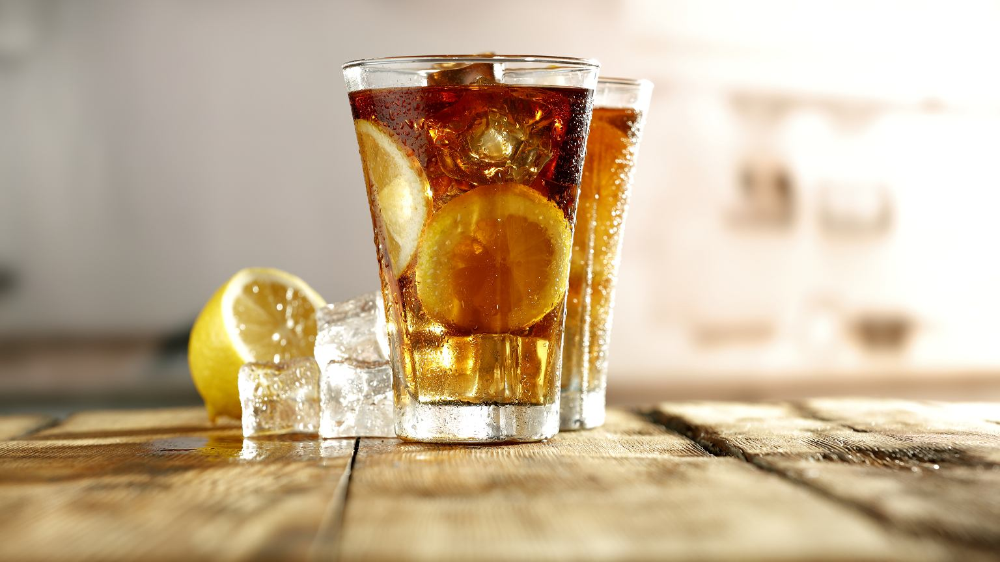

Long Island

Killer nie drink normalnie. Long Island Iced Tea to koktajl alkoholowy przygotowywany z mieszanki wódki, ginu, tequili lub brandy oraz rumu.
Całość dopełniona jest colą, czasami sokiem cytrynowym i triple sec. Jesli lubicie drinki o mocnym posmaku alkoholu to Long Island Iced Tea jest zdecydowanie w tym typie!
Skladniki
- 20 ml wódki;
- 20 ml białego rumu;
- 20 ml gin (20 ml);
- 20 ml likieru triple sec;
- około 20-30 ml soku z cytryny lub limonki;
- cola;
- kostki lodu.
Jak zrobic Long Island
- Do shakera wlewamy wódkę, tequilę, rum, gin, triple sec i sok z cytryny. Wstrząsamy w shakerze;
- Do szklanki do long drinków wkładamy kilka kostek lodu. Tak wymieszane alkohole wlewamy do szklanki na lód. Następnie dolewamy coca coli. Można również najpierw wlać colę a potem alkohol. Po zamieszaniu będzie on miał kolor herbaty. Long Island Iced Tea podaję.
Wroc do strony glownej
Zrodlo